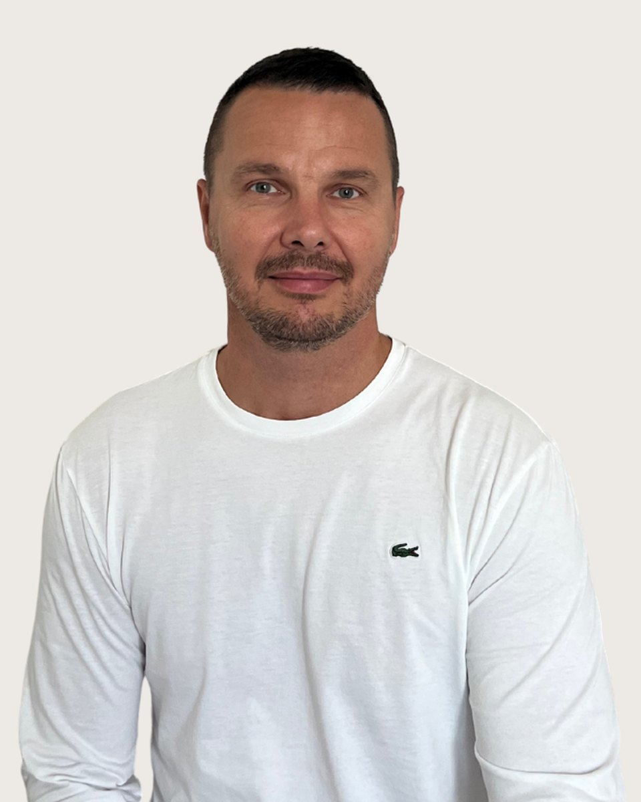

Pszichológus
Marozsi
Zoltán
pszichológus, képzésben lévő CBT Konzultáns
Fogadó kolléga: Vajas Zsuzsanna, pszichológus asszisztens. +36 30 961 1364, hétköznap 9-15. Ő segít, ha nem biztos, hogy Marozsi Zoltán a megfelelő választás.
Minden ember életében eljön az a pont, amikor szükség van arra, hogy megértsük belső működéseinket, és képesek legyünk a megfelelő megküzdési stratégiák kialakítására. A pszichológiai intervenciók során elsődleges célom, hogy klienseimet támogassam intrapszichikus folyamataik tudatosításában, valamint a maladaptív viselkedésminták és kognitív struktúrák átdolgozásában. Ezzel kívánom elősegíteni a személyes reziliencia és a mentális egészség fenntartását, valamint a holisztikus jólét kialakítását. Hiszek az élethosszig tartó tanulásban és a folyamatos önfejlesztésben, mert számomra ezek azok az eszközök, amelyekkel nemcsak másoknak, de önmagunknak is képesek vagyunk segíteni a mindennapi élet kihívásaiban.
A munkám során előszeretettel alkalmazok kognitív viselkedésterápiás (CBT) módszereket, amelyek hatékonyan segítenek a negatív gondolati minták megváltoztatásában és a belső egyensúly helyreállításában.
Amiben segítek
Marozsi Zoltán saját megfogalmazásában
Életvezetési nehézségek, elakadások
Szorongásos zavarok és stresszkezelés
Önismereti kérdések
Önértékelés és önbizalom fejlesztése
Hangulati állapot javítása, érzések kezelése
Kapunyitási krízis
Párkapcsolati elakadások
Motiváció és célkitűzés
Képzés és szakmai út
A képzések és a szupervízió az akkreditált szakképzőhely rendjében folynak. Mit jelent ez Önnek
Végzettség, szakképzettség
Szakmai tapasztalat
Tanítómesterek
Akiknél a módszereket tanulta
- Daubner Eszter, klinikai szakpszichológus, pszichoterapeuta
- Kőváry Zoltán, felnőtt klinikai és mentálhigiénés szakpszichológus, egzisztenciális szemléletű tanácsadó
- Czenner Zsuzsanna, igazságügyi klinikai- és mentálhigiénés felnőtt- és gyermek szakpszichológus szakértő, egyetemi docens
- Kitanics Márk, igazságügyi pszichológus szakértő
- Simon Viktória, pszichiáter, pszichoterapeuta, sématerapeuta sémaszupervizor
Rólam mondták
Kliensek visszajelzései, a hozzájárulásukkal
Elősegíti az önismeret fejlődését és segít abban, hogy magabiztosabban kezeljem a problémáimat.
Segített abban, hogy reálisabb perspektívából nézzem a problémáimat és ne ragadjak bele a negatív gondolatokba.
A munkám során bátorított, hogy szembenézzek a kihívásokkal, és támogató környezetet teremtett számomra.
Ha inkább mást keresne
Három kolléga hasonló területekkel. A teljes regiszterben 35 szakember szűrhető.
Következő lépés
Időpont Marozsi Zoltánnál
Írjon nekünk, vagy hívja ügyfélszolgálatunkat hétköznap 9 és 15 óra között. Az első alkalom 50 perc, díja 15-20 ezer forint alkalmanként. Ha Marozsi Zoltán naptára tele van, megmondjuk, ki tud hasonló területen fogadni.